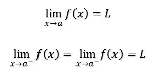

El límite de una función es un concepto fundamental del análisis matemático aplicado a las funciones. En particular, el concepto aplica en análisis real al estudio de límites, continuidad y derivabilidad de las funciones reales. Intuitivamente, el hecho de que una función “f” alcance un límite “L” en un punto “C” significa que, tomando puntos suficientemente próximos a “C”, el valor de f puede ser tan cercano a “L” como se desee. La cercanía de los valores de “f” y “L” no depende del valor que adquiere “f” en dicho punto “C”.
Y decimos "el límite de f(x), cuando “x” tiende a “a”, es igual a L", si podemos acercar arbitrariamente los valores de f(x) a L tanto como deseemos escogiendo una x lo bastante cerca de a, pero nunca igual a.
